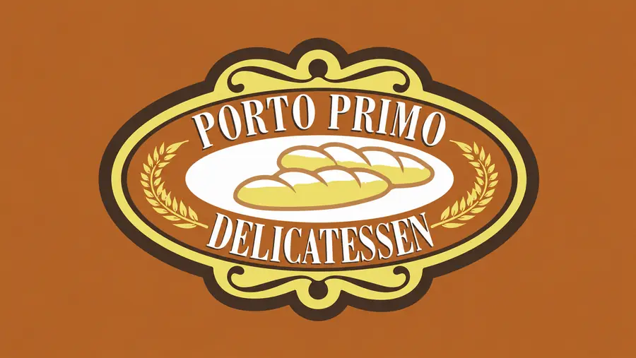

Buffet de café da manhã
Seleção diária com pães frescos, bolos, frutas, frios, tapiocas e acompanhamentos.

Cardápio digital
Estações de padaria, itens regionais, frutas, frios e bebidas quentes para começar o dia.
Buffet com proteínas, massas, guarnições, saladas e acompanhamentos de delicatessen.
Opções quentes, lanches de delicatessen, sopas, cremes e preparos leves para o atendimento noturno.
Bebidas para café da manhã, almoço, jantar e lanches de padaria.
Estrada de Aldeia, KM 9,5.
Buffet e atendimento durante o funcionamento da casa.